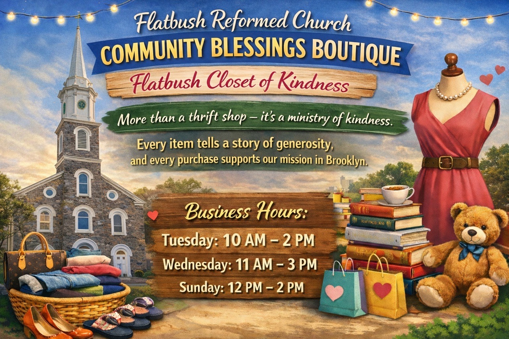

OUR MISSION
Mission & Values
Our Journey of Faith
For over three centuries, Flatbush Reformed Church has stood as a testimony of God’s unchanging faithfulness. Our mission is not simply to gather but to be transformed—to worship with passion, proclaim the Gospel with clarity, and serve our Brooklyn community with a love that can be felt on every block.
We are a church that believes revival begins at home. From restoring families to raising up disciples, our vision is to be a radiant light that shines from Flatbush into the city and beyond.
Learn More
WHAT WE BELIEVE
Core Values
OUR STORY
Our History
Flatbush Reformed Church is a member of the Protestant denomination known as the Reformed Church in America (RCA) and was officially organized in 1654. Our church records have been kept continuously since that year, marking an unbroken heritage of worship and ministry.
Our church has stood on this very site since 1654, when—by order of Governor Peter Stuyvesant—the first wooden structure was erected at a cost of $1,800, to which the Governor personally contributed. Built in the form of a cross, the original building included a rear extension that served as the minister’s residence.
Early Church Buildings
1699: The first wooden church was replaced by a stone structure measuring 65 by 50 feet, built in the form of a square. A central cupola housed a bell, which was tolled from the center of the auditorium. In worship, men and women sat separately—women in the center seats, men around the perimeter. During this period, the tradition began of burying members beneath the church. This second building stood during the American Revolution, and its bell was used to warn of the British approach during the Battle of Long Island.
1796: The second structure was removed, and our present sanctuary was built on the same site. Stones from the earlier building were used in the new six-foot-thick foundation. Most of the wall stones were quarried at Hell Gate, the brownstone for the upper courses came from local Brooklyn woods, and the bricks around the doors and windows were imported from Holland as ship ballast. The edifice cost £1,873.7.7.
1886: A rear extension was added, providing a choir and organ loft upstairs and a vestry room downstairs.
1889: Tiffany memorial windows were installed to honor many of Brooklyn’s earliest families.
The Church Bell
The current bell was donated in 1796 by Hon. John Vanderbilt, who imported it from Holland. En route, the ship carrying it was seized by the British and taken to Halifax, but the bell was later recovered and brought to Flatbush. It has tolled the death of every U.S. President from George Washington to the present day.
A Center of Early Ministry
Our original building was the first church erected in what is now Brooklyn, and our site is the oldest continuous church site in Greater New York. In 1784, Flatbush joined five other Reformed congregations—Flatlands, Brooklyn, New Utrecht, Bushwick, and Gravesend—in a collegium, sharing ministers until each had its own pastor in the early 1800s.
Pastoral Heritage
First minister: Rev. Johannes Theodorus Polhemus (1654–1676)
Last minister to preach in Dutch: Rev. Martinus Schoonmaker (1784–1824), though English began to be introduced in 1792.
As of 1963: twenty ministers had served this congregation.
Historical Treasures
The two chairs in front of the pulpit belonged to Rev. Schoonmaker.
The original communion beakers—crafted by silversmith Garrett Onclebagh (1663–1733)—are now housed in the Brooklyn Museum.
The pulpit pall bears an adaptation of the Coat of Arms of the Reformed Church in America, itself inspired by the arms of William of Orange.
The ten manually operated tower chimes were installed in 1913 in memory of the church’s founders.
Additional Buildings
Parsonage: Built in 1853 at 900 Flatbush Avenue; moved to its present location in 1918.
Church House: Completed in 1924 for Christian education, Sunday School, and church activities.
1926 Sanctuary Renovation: Installed a replica of the original pulpit.
Grounds and Cemetery
Our grounds, located in the geographical center of Brooklyn, hold over 385 graves, many of which bear the names of families memorialized in Brooklyn’s street names—Bergen, Clarkson, Cortelyou, Ditmas, Duryea, Gerritsen, Livingston, Lefferts, Lott, Martense, Schenck, Vanderveer, Van Siclen, and others. The grounds feature a variety of trees and plantings, many of which were added under the guidance of Dr. C. Stuart Gager, the former curator of the Brooklyn Botanic Garden.
The Flatbush Reformed Church has had a succession of 24 pastors dating back to 1654, with the Reverend Dr. De Lafayette Awkward becoming the first African American pastor of our Church.
Our Denomination
The Reformed Church in America traces its roots to the historic Reformed Church in the Netherlands. Our church government is Presbyterian in structure; our worship is semi-liturgical.

STAY CONNECTED
Upcoming Events
WE PRAY TOGETHER
Prayer Requests
At Flatbush Reformed Church, we believe in the power of prayer. Whatever you’re facing, you don’t face it alone. Share your request, and our prayer team will lift it before the Lord.
WATCH & WORSHIP
Live From Brooklyn
GENEROSITY
Giving
Why We Give
Generosity is more than a moment in worship—it’s a lifestyle. Giving keeps our hearts free, fuels ministry in Brooklyn, and invests in eternal impact. Every seed sown helps us proclaim the Gospel and serve our neighbors with Christ’s love.
Ways to Give: By Mail · Secure Online Portal · In Person during worship
By Mail: Send checks to 2103 Kenmore Terrace, Brooklyn, NY 11226.
In Person: During service or office hours.

GROW TOGETHER
Our Ministries
Faith and fellowship come alive through our weekly gatherings at Flatbush Reformed Church. Join us in prayer, study, and community as we grow together in the Word and serve one another.
All are welcome to connect, deepen their walk with Christ, and be strengthened as part of our church family.

COMMUNITY BLESSINGS
Community Blessings Boutique
More than a thrift shop—it’s a ministry of kindness. Every item shared reflects generosity, care, and love for our Brooklyn community.
Business Hours
Tuesday: 10 AM – 2 PM
Wednesday: 11 AM – 3 PM
Sunday: 12 PM – 2 PM
BELONG
Invitation to Membership
Membership is more than joining a church—it’s joining a family. At Flatbush Reformed Church, you’ll find a place where your gifts matter, your story is valued, and your walk with Christ is nurtured.
To belong here is to journey together: to worship, to grow, to serve, and to stand as living witnesses of God’s love in the heart of Brooklyn.
You are not just welcome. You are wanted. You belong here.
GET IN TOUCH
Contact Us
Address: 890 Flatbush Ave, Brooklyn, NY 11226
Phone: (718) 284-5140
Email: Reform1654@gmail.com